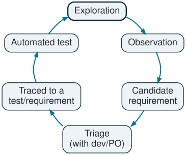
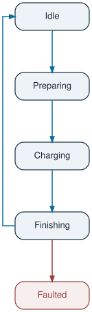
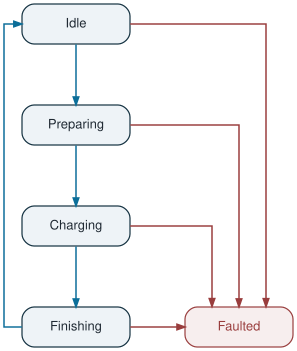

Session Management — EVSE Charger Firmware
25 September 2026
| Source | Confidence | Use |
|---|---|---|
| Standards | High (interfaces, safety) | Invariants, external sequences |
| Safety/physics invariants | High | “Never” rules |
| Developers | Medium (intent, biased toward what they built) | Rationale |
| Code | High for does, zero for should | Model extraction, not an oracle |
| Field logs, tickets | High relevance, medium correctness | Prioritization |
| Old docs, existing tests | Low | Leads only |
| Previous release | Consistency only | Regression testing |
| Behaviour | Conclusion |
|---|---|
| Violates a standard or safety requirement | BUG |
| Harmful for user or operator | BUG1 |
| Contradicts developer intent | BUG |
| Intended and working | INTENDED |
| Nobody can decide | PROVISIONAL |
Decide, document, and compound
Use Behaviour Decision Records to track decisions that compound into specifications. Each BDR records:

Possible health metrics:
state x event matrixTwo test classes:
| Requirement test | Provisional test | |
|---|---|---|
| Expected result from | Baselined requirement | Current observed behavior or best hypothesis |
| Fail means | Bug | Behavior changed → triage (bug or decision) |
| Pass means | Validation evidence | Nothing changed |
| Counts for release sign-off | Yes | No, reported separately* |
| Linked to | Requirement ID | Open question ID + owner + deadline** |

State Machine is ambiguous and partial (as per OCPP):

“Max limit allowed by the connector” is ambiguous: [assumption] the effective limit is the minimum of EVSE, EV, cable, …
Preconditions:
| ID | Type | Input | Expected result * |
|---|---|---|---|
| TC-01 | Nominal | EV requests exactly \(I_{max}\) | Idle→Preparing→Charging. Measured I = \(I_{max}\) ± tolerance, with no overshoot beyond tolerance during ramp-up. Stable for N minutes, no fault. Meter values are consistent |
| TC-02 | Boundary (above) | EV requests \(I_{max}\) + 1 A ** | Charger advertises EVSEMaxCurrent = \(I_{max}\) and delivers ≤ \(I_{max}\). The session is not rejected or faulted, just limited |
| TC-03 | Boundary (below) | EV requests \(I_{max}\) − 1 A | Delivers the requested value exactly. This proves the limiting isn’t over-aggressive or off-by-one |
| TC-04 | Error | While charging at \(I_{max}\), inject a power module fault | Transition to Faulted, current ramps to 0 A, contactors open within the specified time, session closed with the correct final meter value |
Test Case ID: TC-SM-IMAX-001 (TC-01)
Title: Start charging session with EV requesting exactly the connector maximum current
Priority: High
Objective: Verify that when the EV requests a current equal to \(I_{max}\), the charger goes through Idle → Preparing → Charging, delivers \(I_{max}\) within tolerance without overshoot, keeps it stable, and meters the energy correctly.
Preconditions
Test Data
| Parameter | Value |
|---|---|
| Output voltage | 400 V DC |
| EV requested current | \(I_{max}\) = 400 A |
| Hold time | \(T_{stable}\) |
Test Steps and Expected Results
| Step | Action | Expected Result |
|---|---|---|
| 1 | EV emulator runs charge parameter discovery with EV max current = \(I_{max}\) | Charger advertises EVSE max current ≥ \(I_{max}\) (checked in the protocol log). |
| 2 | Let cable check and precharge complete | Both complete without error. No isolation fault. |
| 3 | EV emulator requests target current = \(I_{max}\) | State Preparing → Charging. |
| 4 | Observe the current ramp-up on the power analyzer | Current reaches \(I_{max}\) ± \(I_{tol}\) within \(T_{ramp max}\). No sample exceeds \(I_{max}\) + \(I_{tol}\). |
| 5 | Hold for \(T_{stable}\) | Current stays within \(I_{max}\) ± \(I_{tol}\). No fault, no derating event. Meter values are sent periodically. |
| 6 | Compare Meter values energy with the power analyzer energy | Deviation within metering tolerance (TBD). |
| 7 | EV emulator ends the session | Charging → Finishing. Current goes to 0 A. Contactors open. \(V_{out}\) ≤ \(V_{safe}\). |
| 8 | Unplug the connector | Finishing → Idle. The meter is consistent with the measurement. |
Pass Criteria
Post-conditions
Priorities:
Boundary value analysis gives \(I_{max}\)−1, \(I_{max}\), and \(I_{max}\)+1. The large value test catches overflows and saturation bugs. Enforced by TC-03
Left out on purpose:
| Rest | Reason |
|---|---|
| Thermal soak | Takes hours. Candidate for nightly runs |
| Real-vehicle tests | Belongs in a separate campain |
| Combined faults | Combinatorial explosion. Focus on single failures first. |
| HMI | Affects UX, less likely to have critical consequences |
AI prompt:
You are a test engineer for DC fast chargers (EVSE)
The charger firmware has a session management state machine with states Idle → Preparing → Charging → Finishing → Faulted
Write a detailed test case to validate the correct sequence for interrupting a charging session started by the user, from the STOP command on the HMI up to reaching a safe state
Include test ID, objective, preconditions, test data, steps, and expected results
Reference relevant standards where applicableTest Case ID: TC-SM-STOP-001
Title: User-initiated charging session stop via HMI
Priority: High
Objective: Verify that when the user presses STOP on the HMI during an active charging session, the charger safely terminates energy transfer, transitions through the correct states, and reaches a safe state in compliance with IEC 61851-23 and OCPP 1.6.
Preconditions
Test Data
| Parameter | Value |
|---|---|
| Connector type | CCS2 |
| Output voltage | 400 V DC |
| Charging current | 100 A |
| RFID tag | Valid test tag (ID: 04A1B2C3D4) |
| OCPP version | 1.6J |
Test Steps and Expected Results
| Step | Action | Expected Result |
|---|---|---|
| 1 | Verify the charger is in Charging state | HMI displays charging screen with live power, energy and time. Session state = Charging. |
| 2 | Press the STOP button on the HMI | HMI displays a “Stopping charging session…” message immediately. |
| 3 | Observe state transition | Session state transitions from Charging to Finishing within 1 second. |
| 4 | Observe power module behavior | Charging current ramps down to 0 A within 2 seconds, as required by IEC 61851-23. |
| 5 | Observe EV communication | Charger sends a stop request to the EV via ISO 15118 / DIN 70121. The EV acknowledges. |
| 6 | Observe contactors | DC contactors open once current reaches 0 A. |
| 7 | Observe output voltage | Output voltage drops below 60 V DC within 1 second, according to IEC 61851-23 clause 102.5.2. |
| 8 | Observe connector lock | Connector is unlocked, allowing the user to remove the cable. |
| 9 | Observe OCPP messages | Charger sends StopTransaction.req to the CSMS with reason = “Local” and the correct meterStop value. CSMS responds with StopTransaction.conf. |
| 10 | Observe HMI | HMI displays a session summary (energy delivered, duration, cost) and a “Please unplug your vehicle” message. |
| 11 | User unplugs the cable | Session state transitions from Finishing to Idle. Charger sends StatusNotification.req with status = “Available”. |
Pass Criteria
Post-conditions
Test Case ID: TC-SM-STOP-001
Title: User-initiated charging session stop via HMI
Priority: High
Objective: Verify that when the user presses STOP on the HMI during an active charging session, the charger safely terminates energy transfer, transitions through the correct states, and reaches a safe state in compliance with IEC 61851-23 [AI-UNVERIFIED] and OCPP 1.6 [ASSUMP]
Preconditions
Test Data
| Parameter | Value |
|---|---|
| Connector type | CCS2 [ASSUMP] |
| Output voltage | 400 V DC [ASSUMP] |
| Charging current | 100 A [ASSUMP] |
| RFID tag | Valid test tag (ID: 04A1B2C3D4) [ASSUMP] |
| OCPP version | 1.6J [ASSUMP] |
Test Steps and Expected Results
| Step | Action | Expected Result |
|---|---|---|
| 3 | Observe state transition | Session state transitions from Charging to Finishing within 1 second [ASSUMP] |
| 4 | Observe power module behavior [ask order confirmation] | Charging current ramps down to 0 A [< X A] within 2 seconds [ASSUMP], as required by IEC 61851-23 [AI-UNVERIFIED] |
| 5 | Observe EV communication [ask order confirmation] | Charger sends a stop request to the EV via ISO 15118 / DIN 70121 [ASSUMP]. The EV acknowledges [add observation point] |
| 6 | Observe contactors [ask order confirmation] | DC contactors open once current reaches 0 A |
Pass Criteria
Whole draft
Edge cases:
Vague or unverifiable in the scenario:
Pitfalls:
Benefits:
Charging drives the session to Faulted. The connector stays locked and the station needs a technician reset; StopTransaction is sent with reason = Other.
StopTransaction.reason enum · developer interview 2026-09-14 · field logs, 11 occurrences across 3 sites
Faulted branch was written for CP loss without a preceding stop request.
REQ-SM-014 (new) · TC-SM-201/202/203 · defect EVSE-4471
Charging does not end the session. Meter values are queued locally and replayed on reconnect; the HMI shows only an offline icon.
OPS-882 · commit message of the original change
REQ-SM-031 (new, from this record) · TC-SM-310/311 · TC-SM-312 (queue overflow)
Charging does not end the session: the charger derates to the healthy modules and continues at reduced current. The HMI shows nothing; the customer sees only a slower charge.
provisional: it is evidence of what the firmware does, not yet agreement that it is right.
REQ-SM-047 (provisional) · TC-SM-420, tagged provisional · open question Q-SM-009
Test Case ID: TC-SM-IMAX-001 (TC-01)
Title: Start charging session with EV requesting exactly the connector maximum current
Priority: High
Objective: Verify that when the EV requests a current equal to \(I_{max}\), the charger goes through Idle → Preparing → Charging, delivers \(I_{max}\) within tolerance without overshoot, keeps it stable, and meters the energy correctly.
Preconditions
Test Data
| Parameter | Value |
|---|---|
| Output voltage | 400 V DC |
| EV requested current | \(I_{max}\) = 400 A |
| Hold time | \(T_{stable}\) |
Test Steps and Expected Results
| Step | Action | Expected Result |
|---|---|---|
| 1 | EV emulator runs charge parameter discovery with EV max current = \(I_{max}\) | Charger advertises EVSE max current ≥ \(I_{max}\) (checked in the protocol log). |
| 2 | Let cable check and precharge complete | Both complete without error. No isolation fault. |
| 3 | EV emulator requests target current = \(I_{max}\) | State Preparing → Charging. |
| 4 | Observe the current ramp-up on the power analyzer | Current reaches \(I_{max}\) ± \(I_{tol}\) within \(T_{ramp max}\). No sample exceeds \(I_{max}\) + \(I_{tol}\). |
| 5 | Hold for \(T_{stable}\) | Current stays within \(I_{max}\) ± \(I_{tol}\). No fault, no derating event. Meter values are sent periodically. |
| 6 | Compare Meter values energy with the power analyzer energy | Deviation within metering tolerance (TBD). |
| 7 | EV emulator ends the session | Charging → Finishing. Current goes to 0 A. Contactors open. \(V_{out}\) ≤ \(V_{safe}\). |
| 8 | Unplug the connector | Finishing → Idle. The meter is consistent with the measurement. |
Pass Criteria
Post-conditions
Test Case ID: TC-SM-IMAX-002 (TC-02)
Title: EV requests current above the connector maximum
Priority: High
Objective: Verify that when the EV requests a current above I_{max}, the charger limits the delivered current to I_{max} without rejecting or faulting the session, and handles extreme request values without overflow.
Preconditions
Same as TC-SM-IMAX-001.
Test Data
[the test is run once per requested value]
| Parameter | Value |
|---|---|
| Connector type | CCS2 |
| EV requested current | Run A: \(I_{max}\) + 1 A · Run B: 2 × \(I_{max}\) · Run C: maximum value the protocol allows |
| Hold time | \(T_{stable}\) |
Test Steps and Expected Results
| Step | Action | Expected Result |
|---|---|---|
| 1 | EV emulator runs charge parameter discovery | Charger advertises EVSE max current = \(I_{max}\). |
| 2 | EV emulator requests the value for this run | Session is not rejected. Preparing → Charging. |
| 3 | Observe the ramp-up | No sample exceeds \(I_{max}\) + \(I_{tol}\). |
| 4 | Hold for \(T_{stable}\) | Current stays within \(I_{max}\) ± \(I_{tol}\). No Faulted state. |
| 5 | Run C only: check the logs and the charger’s reaction | No overflow or wrap-around (current does not jump to a low or negative value). No process crash or restart. |
| 6 | End the session and unplug | Normal Finishing → Idle. StopTransaction is correct. |
Pass Criteria
Post-conditions
Test Case ID: TC-SM-IMAX-003 (TC-03)
Title: EV requests current just below the connector maximum
Priority: Medium
Objective: Verify that a request just below I_{max} is delivered exactly as requested. This rules out off-by-one errors and overly aggressive limits.
Preconditions
Same as TC-SM-IMAX-001.
Test Data
| Parameter | Value |
|---|---|
| Output voltage | 400 V DC |
| EV requested current | \(I_{max}\) - 1 A = 199 A |
| Hold time | \(T_{stable}\) |
Test Steps and Expected Results
| Step | Action | Expected Result |
|---|---|---|
| 1 | EV emulator requests I_{max} − 1 A | Preparing → Charging. |
| 2 | Hold for T_{stable} | Delivered current = requested value ± I_{tol}. It is not limited lower. |
| 3 | End the session and unplug | Normal Finishing → Idle. |
Pass Criteria
Post-conditions
The charger is in Idle and Available.
Test Case ID: TC-SM-IMAX-004 (TC-04)
Title: Power module fault while charging at the connector maximum current
Priority: High
Objective: Verify that a power module fault while charging at \(I_{max}\) brings the charger to Faulted and a safe state within the time limits, closes the session with correct metering, and blocks new sessions until the fault is cleared.
Preconditions
Test Data
| Parameter | Value |
|---|---|
| Output voltage | 400 V DC |
| EV requested current | \(I_{max}\) = 400 A |
| Hold time | \(T_{stable}\) |
| Injected fault | Power module error |
Test Steps and Expected Results
| Step | Action | Expected Result |
|---|---|---|
| 1 | Run TC-SM-IMAX-001 steps 1–5 | Charging at \(I_{max}\), stable. |
| 2 | Inject the power module fault and record the time t0 | State Charging → Faulted. |
| 3 | Measure the current | Current reaches 0 A within \(T_{shutdown max}\) from t0. |
| 4 | Observe the contactors and the output voltage | Contactors open. \(V_{out}\) ≤ \(V_{safe}\) within the specified time (TBD). |
| 5 | Observe the OCPP messages | StatusNotification = Faulted with errorCode and vendorErrorCode. StopTransaction.req with a meterStop matching the measurement. |
| 6 | Observe the HMI | An error / out-of-service message is displayed. |
| 7 | Try to start a new session | Authorization or start is refused while the fault is active. |
| 8 | Clear the fault | Faulted → Idle (or reset required, per OQ-05). StatusNotification = Available. |
Pass Criteria
Post-conditions